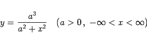
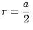
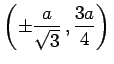
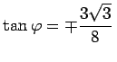
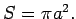
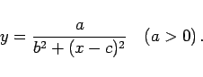

|  | (2.215a) |
liefert die in der folgenden Abbildung dargestellte Versiera der Agnesi.
Sie besitzt eine Asymptote mit der Gleichung y = 0, ein Maximum A bei (0,a); der dazugehörige Krümmungsradius beträgt . Die Wendepunkte B und C befinden sich bei , die Tangentenneigungswinkel sind dort gegeben durch . Die Fläche zwischen der Kurve und der Asymptote beträgt  Die Versiera der Agnesi ist ein Spezialfall der LORENTZ- oder BREIT-WIGNER-Kurve mit der Gleichung
|  | (2.215b) |
| Beispiel |
|
Als Bildfunktion der gedämpften Schwingung bezüglich der FOURIER-Transformation ergibt sich die LORENTZ- oder BREIT-WIGNER-Kurve. |